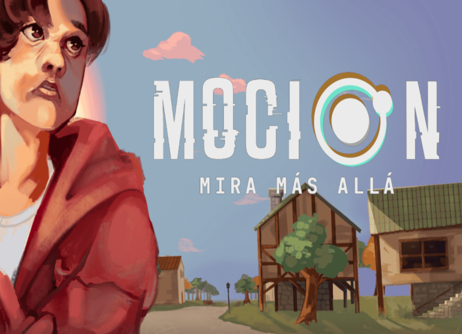
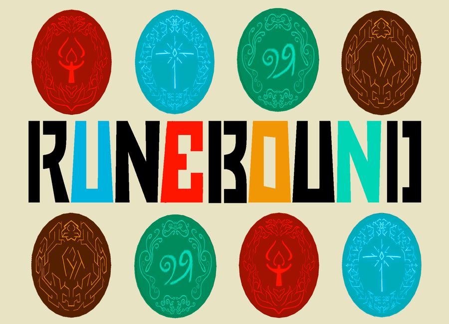

Eduardo Salazar Brufau
Gameplay Programmer
Gameplay Programmer




Hello! I am a junior video game developer with a passion for creating immersive gaming experiences. My dream is to work with large, dynamic teams on ambitious projects that push the boundaries of interactive entertainment.
With a strong foundation in C#, C++, and experience with Unreal Engine and Unity, I am well-equipped to take on roles as a programmer or game designer. I am particularly drawn to PC gaming and have a special interest in stealth and horror genres, constantly seeking new ways to engage players and elicit thrilling emotions through gameplay.